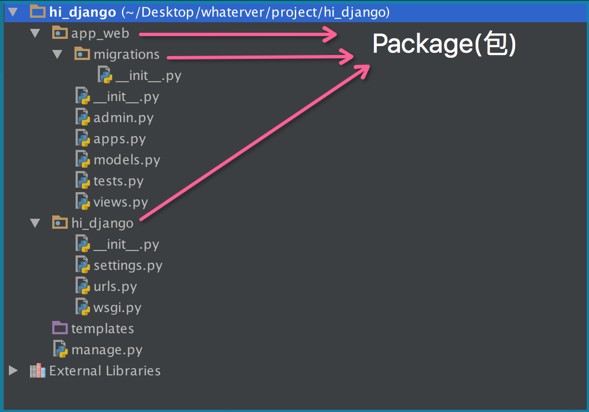
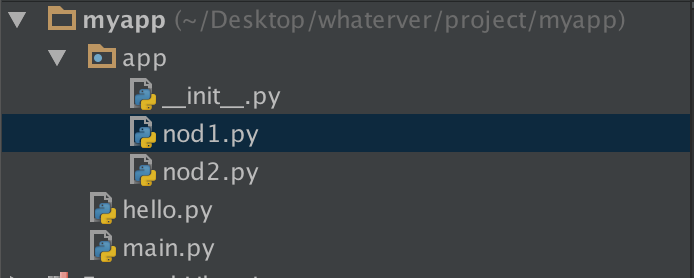
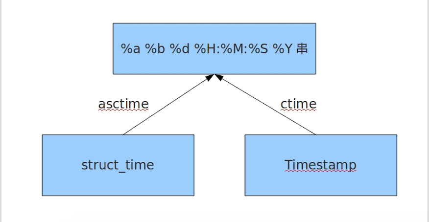
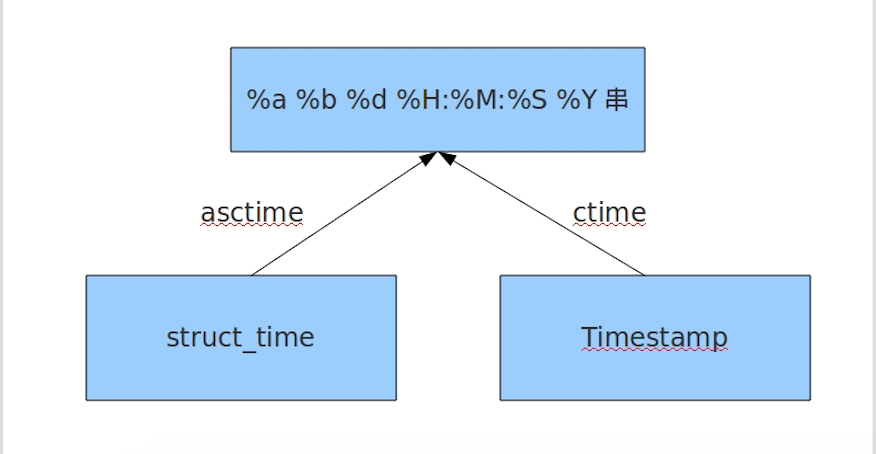
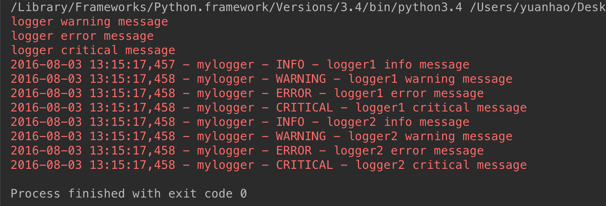
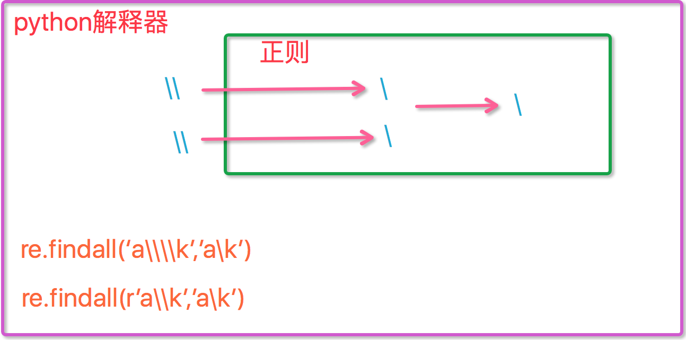

Py西游攻关之模块
模块&包(* * * * *)
模块(modue)的概念：
在计算机程序的开发过程中，随着程序代码越写越多，在一个文件里代码就会越来越长，越来越不容易维护。
为了编写可维护的代码，我们把很多函数分组，分别放到不同的文件里，这样，每个文件包含的代码就相对较少，很多编程语言都采用这种组织代码的方式。在Python中，一个.py文件就称之为一个模块（Module）。
使用模块有什么好处？
最大的好处是大大提高了代码的可维护性。
其次，编写代码不必从零开始。当一个模块编写完毕，就可以被其他地方引用。我们在编写程序的时候，也经常引用其他模块，包括Python内置的模块和来自第三方的模块。
所以，模块一共三种：
- python标准库
- 第三方模块
- 应用程序自定义模块
另外，使用模块还可以避免函数名和变量名冲突。相同名字的函数和变量完全可以分别存在不同的模块中，因此，我们自己在编写模块时，不必考虑名字会与其他模块冲突。但是也要注意，尽量不要与内置函数名字冲突。
模块导入方法
1 import 语句
1 | import module1[, module2[,... moduleN] |
当我们使用import语句的时候，Python解释器是怎样找到对应的文件的呢？答案就是解释器有自己的搜索路径，存在sys.path里。
1 2 | ['', '/usr/lib/python3.4', '/usr/lib/python3.4/plat-x86_64-linux-gnu', '/usr/lib/python3.4/lib-dynload', '/usr/local/lib/python3.4/dist-packages', '/usr/lib/python3/dist-packages'] |
因此若像我一样在当前目录下存在与要引入模块同名的文件，就会把要引入的模块屏蔽掉。
2 from…import 语句
1 | from modname import name1[, name2[, ... nameN]] |
这个声明不会把整个modulename模块导入到当前的命名空间中，只会将它里面的name1或name2单个引入到执行这个声明的模块的全局符号表。
3 From…import* 语句
1 | from modname import * |
这提供了一个简单的方法来导入一个模块中的所有项目。然而这种声明不该被过多地使用。大多数情况， Python程序员不使用这种方法，因为引入的其它来源的命名，很可能覆盖了已有的定义。
4 运行本质
1 2 | #1 import test#2 from test import add |
无论1还是2，首先通过sys.path找到test.py,然后执行test脚本（全部执行），区别是1会将test这个变量名加载到名字空间，而2只会将add这个变量名加载进来。
包(package)
如果不同的人编写的模块名相同怎么办？为了避免模块名冲突，Python又引入了按目录来组织模块的方法，称为包（Package）。
举个例子，一个abc.py的文件就是一个名字叫abc的模块，一个xyz.py的文件就是一个名字叫xyz的模块。
现在，假设我们的abc和xyz这两个模块名字与其他模块冲突了，于是我们可以通过包来组织模块，避免冲突。方法是选择一个顶层包名：

引入了包以后，只要顶层的包名不与别人冲突，那所有模块都不会与别人冲突。现在，view.py模块的名字就变成了hello_django.app01.views，类似的，manage.py的模块名则是hello_django.manage。
请注意，每一个包目录下面都会有一个__init__.py的文件，这个文件是必须存在的，否则，Python就把这个目录当成普通目录(文件夹)，而不是一个包。__init__.py可以是空文件，也可以有Python代码，因为__init__.py本身就是一个模块，而它的模块名就是对应包的名字。
调用包就是执行包下的__init__.py文件
注意点（important）

1--------------
在nod1里import hello是找不到的，有同学说可以找到呀，那是因为你的pycharm为你把myapp这一层路径加入到了sys.path里面，所以可以找到，然而程序一旦在命令行运行，则报错。有同学问那怎么办？简单啊，自己把这个路径加进去不就OK啦：
1 2 3 4 5 | import sys,osBASE_DIR=os.path.dirname(os.path.dirname(os.path.abspath(__file__)))sys.path.append(BASE_DIR)import hellohello.hello1() |
2 --------------
1 2 | if __name__=='__main__': print('ok') |
“Make a .py both importable and executable”
如果我们是直接执行某个.py文件的时候，该文件中那么”__name__ == '__main__'“是True,但是我们如果从另外一个.py文件通过import导入该文件的时候，这时__name__的值就是我们这个py文件的名字而不是__main__。
这个功能还有一个用处：调试代码的时候，在”if __name__ == '__main__'“中加入一些我们的调试代码，我们可以让外部模块调用的时候不执行我们的调试代码，但是如果我们想排查问题的时候，直接执行该模块文件，调试代码能够正常运行！s
3

1 2 3 4 5 6 7 8 9 10 11 12 13 14 15 | ##-------------cal.pydef add(x,y): return x+y##-------------main.pyimport cal #from module import caldef main(): cal.add(1,2) ##--------------bin.pyfrom module import mainmain.main() |


# from module import cal 改成 from . import cal同样可以，这是因为bin.py是我们的执行脚本， # sys.path里有bin.py的当前环境。即/Users/yuanhao/Desktop/whaterver/project/web这层路径， # 无论import what , 解释器都会按这个路径找。所以当执行到main.py时，import cal会找不到，因为 # sys.path里没有/Users/yuanhao/Desktop/whaterver/project/web/module这个路径，而 # from module/. import cal 时，解释器就可以找到了。
time模块(* * * *)
三种时间表示
在Python中，通常有这几种方式来表示时间：
- 时间戳(timestamp) ： 通常来说，时间戳表示的是从1970年1月1日00:00:00开始按秒计算的偏移量。我们运行“type(time.time())”，返回的是float类型。
- 格式化的时间字符串
- 元组(struct_time) ： struct_time元组共有9个元素共九个元素:(年，月，日，时，分，秒，一年中第几周，一年中第几天，夏令时)
1 2 3 4 5 6 7 8 9 10 11 12 13 14 15 16 17 18 19 20 21 22 23 24 25 26 27 28 29 30 31 32 33 34 35 36 37 38 39 40 41 42 43 44 45 46 47 48 49 50 51 52 53 54 55 56 57 58 | import time# 1 time() :返回当前时间的时间戳time.time() #1473525444.037215#----------------------------------------------------------# 2 localtime([secs])# 将一个时间戳转换为当前时区的struct_time。secs参数未提供，则以当前时间为准。time.localtime() #time.struct_time(tm_year=2016, tm_mon=9, tm_mday=11, tm_hour=0,# tm_min=38, tm_sec=39, tm_wday=6, tm_yday=255, tm_isdst=0)time.localtime(1473525444.037215)#----------------------------------------------------------# 3 gmtime([secs]) 和localtime()方法类似，gmtime()方法是将一个时间戳转换为UTC时区（0时区）的struct_time。#----------------------------------------------------------# 4 mktime(t) : 将一个struct_time转化为时间戳。print(time.mktime(time.localtime()))#1473525749.0#----------------------------------------------------------# 5 asctime([t]) : 把一个表示时间的元组或者struct_time表示为这种形式：'Sun Jun 20 23:21:05 1993'。# 如果没有参数，将会将time.localtime()作为参数传入。print(time.asctime())#Sun Sep 11 00:43:43 2016#----------------------------------------------------------# 6 ctime([secs]) : 把一个时间戳（按秒计算的浮点数）转化为time.asctime()的形式。如果参数未给或者为# None的时候，将会默认time.time()为参数。它的作用相当于time.asctime(time.localtime(secs))。print(time.ctime()) # Sun Sep 11 00:46:38 2016print(time.ctime(time.time())) # Sun Sep 11 00:46:38 2016# 7 strftime(format[, t]) : 把一个代表时间的元组或者struct_time（如由time.localtime()和# time.gmtime()返回）转化为格式化的时间字符串。如果t未指定，将传入time.localtime()。如果元组中任何一个# 元素越界，ValueError的错误将会被抛出。print(time.strftime("%Y-%m-%d %X", time.localtime()))#2016-09-11 00:49:56# 8 time.strptime(string[, format])# 把一个格式化时间字符串转化为struct_time。实际上它和strftime()是逆操作。print(time.strptime('2011-05-05 16:37:06', '%Y-%m-%d %X'))#time.struct_time(tm_year=2011, tm_mon=5, tm_mday=5, tm_hour=16, tm_min=37, tm_sec=6,# tm_wday=3, tm_yday=125, tm_isdst=-1)#在这个函数中，format默认为："%a %b %d %H:%M:%S %Y"。# 9 sleep(secs)# 线程推迟指定的时间运行，单位为秒。# 10 clock()# 这个需要注意，在不同的系统上含义不同。在UNIX系统上，它返回的是“进程时间”，它是用秒表示的浮点数（时间戳）。# 而在WINDOWS中，第一次调用，返回的是进程运行的实际时间。而第二次之后的调用是自第一次调用以后到现在的运行# 时间，即两次时间差。 |
 

1 2 | help(time)help(time.asctime) |
random模块(* *)
1 2 3 4 5 6 7 8 9 10 11 12 13 14 15 16 17 18 | import randomprint(random.random())#(0,1)----floatprint(random.randint(1,3)) #[1,3]print(random.randrange(1,3)) #[1,3)print(random.choice([1,'23',[4,5]]))#23print(random.sample([1,'23',[4,5]],2))#[[4, 5], '23']print(random.uniform(1,3))#1.927109612082716item=[1,3,5,7,9]random.shuffle(item)print(item) |

import random def v_code(): code = '' for i in range(5): num=random.randint(0,9) alf=chr(random.randint(65,90)) add=random.choice([num,alf]) code += str(add) return code print(v_code())
os模块(* * * *)
os模块是与操作系统交互的一个接口
os.getcwd() 获取当前工作目录，即当前python脚本工作的目录路径 os.chdir("dirname") 改变当前脚本工作目录；相当于shell下cd os.curdir 返回当前目录: ('.') os.pardir 获取当前目录的父目录字符串名：('..') os.makedirs('dirname1/dirname2') 可生成多层递归目录 os.removedirs('dirname1') 若目录为空，则删除，并递归到上一级目录，如若也为空，则删除，依此类推 os.mkdir('dirname') 生成单级目录；相当于shell中mkdir dirname os.rmdir('dirname') 删除单级空目录，若目录不为空则无法删除，报错；相当于shell中rmdir dirname os.listdir('dirname') 列出指定目录下的所有文件和子目录，包括隐藏文件，并以列表方式打印 os.remove() 删除一个文件 os.rename("oldname","newname") 重命名文件/目录 os.stat('path/filename') 获取文件/目录信息 os.sep 输出操作系统特定的路径分隔符，win下为"\\",Linux下为"/" os.linesep 输出当前平台使用的行终止符，win下为"\t\n",Linux下为"\n" os.pathsep 输出用于分割文件路径的字符串 win下为;,Linux下为: os.name 输出字符串指示当前使用平台。win->'nt'; Linux->'posix' os.system("bash command") 运行shell命令，直接显示 os.environ 获取系统环境变量 os.path.abspath(path) 返回path规范化的绝对路径 os.path.split(path) 将path分割成目录和文件名二元组返回 os.path.dirname(path) 返回path的目录。其实就是os.path.split(path)的第一个元素 os.path.basename(path) 返回path最后的文件名。如何path以／或\结尾，那么就会返回空值。即os.path.split(path)的第二个元素 os.path.exists(path) 如果path存在，返回True；如果path不存在，返回False os.path.isabs(path) 如果path是绝对路径，返回True os.path.isfile(path) 如果path是一个存在的文件，返回True。否则返回False os.path.isdir(path) 如果path是一个存在的目录，则返回True。否则返回False os.path.join(path1[, path2[, ...]]) 将多个路径组合后返回，第一个绝对路径之前的参数将被忽略 os.path.getatime(path) 返回path所指向的文件或者目录的最后存取时间 os.path.getmtime(path) 返回path所指向的文件或者目录的最后修改时间
sys模块(* * *)
1 2 3 4 5 6 | sys.argv 命令行参数List，第一个元素是程序本身路径sys.exit(n) 退出程序，正常退出时exit(0)sys.version 获取Python解释程序的版本信息sys.maxint 最大的Int值sys.path 返回模块的搜索路径，初始化时使用PYTHONPATH环境变量的值sys.platform 返回操作系统平台名称 |
进度条：
import sys,time for i in range(10): sys.stdout.write('#') time.sleep(1) sys.stdout.flush()
json & pickle(* * * *)
之前我们学习过用eval内置方法可以将一个字符串转成python对象，不过，eval方法是有局限性的，对于普通的数据类型，json.loads和eval都能用，但遇到特殊类型的时候，eval就不管用了,所以eval的重点还是通常用来执行一个字符串表达式，并返回表达式的值。
1 2 3 4 | import jsonx="[null,true,false,1]"print(eval(x))print(json.loads(x)) |
什么是序列化？
我们把对象(变量)从内存中变成可存储或传输的过程称之为序列化，在Python中叫pickling，在其他语言中也被称之为serialization，marshalling，flattening等等，都是一个意思。
序列化之后，就可以把序列化后的内容写入磁盘，或者通过网络传输到别的机器上。
反过来，把变量内容从序列化的对象重新读到内存里称之为反序列化，即unpickling。
json
如果我们要在不同的编程语言之间传递对象，就必须把对象序列化为标准格式，比如XML，但更好的方法是序列化为JSON，因为JSON表示出来就是一个字符串，可以被所有语言读取，也可以方便地存储到磁盘或者通过网络传输。JSON不仅是标准格式，并且比XML更快，而且可以直接在Web页面中读取，非常方便。
JSON表示的对象就是标准的JavaScript语言的对象，JSON和Python内置的数据类型对应如下：

1 2 3 4 5 6 7 8 9 10 11 12 13 14 15 16 17 | #----------------------------序列化import jsondic={'name':'alvin','age':23,'sex':'male'}print(type(dic))#<class 'dict'>j=json.dumps(dic)print(type(j))#<class 'str'>f=open('序列化对象','w')f.write(j) #-------------------等价于json.dump(dic,f)f.close()#-----------------------------反序列化<br>import jsonf=open('序列化对象')data=json.loads(f.read())# 等价于data=json.load(f) |
import json #dct="{'1':111}"#json 不认单引号 #dct=str({"1":111})#报错,因为生成的数据还是单引号:{'one': 1} dct='{"1":"111"}' print(json.loads(dct)) #conclusion: # 无论数据是怎样创建的，只要满足json格式，就可以json.loads出来,不一定非要dumps的数据才能loads
pickle
1 2 3 4 5 6 7 8 9 10 11 12 13 14 15 16 17 18 19 20 21 22 23 | ##----------------------------序列化import pickledic={'name':'alvin','age':23,'sex':'male'}print(type(dic))#<class 'dict'>j=pickle.dumps(dic)print(type(j))#<class 'bytes'>f=open('序列化对象_pickle','wb')#注意是w是写入str,wb是写入bytes,j是'bytes'f.write(j) #-------------------等价于pickle.dump(dic,f)f.close()#-------------------------反序列化import picklef=open('序列化对象_pickle','rb')data=pickle.loads(f.read())# 等价于data=pickle.load(f)print(data['age']) |
Pickle的问题和所有其他编程语言特有的序列化问题一样，就是它只能用于Python，并且可能不同版本的Python彼此都不兼容，因此，只能用Pickle保存那些不重要的数据，不能成功地反序列化也没关系。
shelve模块(* * *)
shelve模块比pickle模块简单，只有一个open函数，返回类似字典的对象，可读可写;key必须为字符串，而值可以是python所支持的数据类型
1 2 3 4 5 6 7 8 9 10 11 12 | import shelvef = shelve.open(r'shelve.txt')# f['stu1_info']={'name':'alex','age':'18'}# f['stu2_info']={'name':'alvin','age':'20'}# f['school_info']={'website':'oldboyedu.com','city':'beijing'}### f.close()print(f.get('stu_info')['age']) |
xml模块(* *)
xml是实现不同语言或程序之间进行数据交换的协议，跟json差不多，但json使用起来更简单，不过，古时候，在json还没诞生的黑暗年代，大家只能选择用xml呀，至今很多传统公司如金融行业的很多系统的接口还主要是xml。
xml的格式如下，就是通过<>节点来区别数据结构的:
<?xml version="1.0"?> <data> <country name="Liechtenstein"> <rank updated="yes">2</rank> <year>2008</year> <gdppc>141100</gdppc> <neighbor name="Austria" direction="E"/> <neighbor name="Switzerland" direction="W"/> </country> <country name="Singapore"> <rank updated="yes">5</rank> <year>2011</year> <gdppc>59900</gdppc> <neighbor name="Malaysia" direction="N"/> </country> <country name="Panama"> <rank updated="yes">69</rank> <year>2011</year> <gdppc>13600</gdppc> <neighbor name="Costa Rica" direction="W"/> <neighbor name="Colombia" direction="E"/> </country> </data>
xml协议在各个语言里的都 是支持的，在python中可以用以下模块操作xml：
import xml.etree.ElementTree as ET tree = ET.parse("xmltest.xml") root = tree.getroot() print(root.tag) #遍历xml文档 for child in root: print(child.tag, child.attrib) for i in child: print(i.tag,i.text) #只遍历year 节点 for node in root.iter('year'): print(node.tag,node.text) #--------------------------------------- import xml.etree.ElementTree as ET tree = ET.parse("xmltest.xml") root = tree.getroot() #修改 for node in root.iter('year'): new_year = int(node.text) + 1 node.text = str(new_year) node.set("updated","yes") tree.write("xmltest.xml") #删除node for country in root.findall('country'): rank = int(country.find('rank').text) if rank > 50: root.remove(country) tree.write('output.xml')
自己创建xml文档：
import xml.etree.ElementTree as ET new_xml = ET.Element("namelist") name = ET.SubElement(new_xml,"name",attrib={"enrolled":"yes"}) age = ET.SubElement(name,"age",attrib={"checked":"no"}) sex = ET.SubElement(name,"sex") sex.text = '33' name2 = ET.SubElement(new_xml,"name",attrib={"enrolled":"no"}) age = ET.SubElement(name2,"age") age.text = '19' et = ET.ElementTree(new_xml) #生成文档对象 et.write("test.xml", encoding="utf-8",xml_declaration=True) ET.dump(new_xml) #打印生成的格式
configparser模块(* *)
来看一个好多软件的常见文档格式如下：
1 2 3 4 5 6 7 8 9 10 11 12 | [DEFAULT]ServerAliveInterval = 45Compression = yesCompressionLevel = 9ForwardX11 = yes [bitbucket.org]User = hg [topsecret.server.com]Port = 50022ForwardX11 = no |
如果想用python生成一个这样的文档怎么做呢？
1 2 3 4 5 6 7 8 9 10 11 12 13 14 15 16 | import configparser config = configparser.ConfigParser()config["DEFAULT"] = {'ServerAliveInterval': '45', 'Compression': 'yes', 'CompressionLevel': '9'} config['bitbucket.org'] = {}config['bitbucket.org']['User'] = 'hg'config['topsecret.server.com'] = {}topsecret = config['topsecret.server.com']topsecret['Host Port'] = '50022' # mutates the parsertopsecret['ForwardX11'] = 'no' # same hereconfig['DEFAULT']['ForwardX11'] = 'yes'<br>with open('example.ini', 'w') as configfile: config.write(configfile) |
import configparser config = configparser.ConfigParser() #---------------------------------------------查 print(config.sections()) #[] config.read('example.ini') print(config.sections()) #['bitbucket.org', 'topsecret.server.com'] print('bytebong.com' in config)# False print(config['bitbucket.org']['User']) # hg print(config['DEFAULT']['Compression']) #yes print(config['topsecret.server.com']['ForwardX11']) #no for key in config['bitbucket.org']: print(key) # user # serveraliveinterval # compression # compressionlevel # forwardx11 print(config.options('bitbucket.org'))#['user', 'serveraliveinterval', 'compression', 'compressionlevel', 'forwardx11'] print(config.items('bitbucket.org')) #[('serveraliveinterval', '45'), ('compression', 'yes'), ('compressionlevel', '9'), ('forwardx11', 'yes'), ('user', 'hg')] print(config.get('bitbucket.org','compression'))#yes #---------------------------------------------删,改,增(config.write(open('i.cfg', "w"))) config.add_section('yuan') config.remove_section('topsecret.server.com') config.remove_option('bitbucket.org','user') config.set('bitbucket.org','k1','11111') config.write(open('i.cfg', "w"))
hashlib模块(* *)
用于加密相关的操作，3.x里代替了md5模块和sha模块，主要提供 SHA1, SHA224, SHA256, SHA384, SHA512 ，MD5 算法
1 2 3 4 5 6 7 8 9 10 11 12 13 14 | import hashlibm=hashlib.md5()# m=hashlib.sha256()m.update('hello'.encode('utf8'))print(m.hexdigest()) #5d41402abc4b2a76b9719d911017c592m.update('alvin'.encode('utf8'))print(m.hexdigest()) #92a7e713c30abbb0319fa07da2a5c4afm2=hashlib.md5()m2.update('helloalvin'.encode('utf8'))print(m2.hexdigest()) #92a7e713c30abbb0319fa07da2a5c4af |
以上加密算法虽然依然非常厉害，但时候存在缺陷，即：通过撞库可以反解。所以，有必要对加密算法中添加自定义key再来做加密。
1 2 3 4 5 6 7 | import hashlib# ######## 256 ########hash = hashlib.sha256('898oaFs09f'.encode('utf8'))hash.update('alvin'.encode('utf8'))print (hash.hexdigest())#e79e68f070cdedcfe63eaf1a2e92c83b4cfb1b5c6bc452d214c1b7e77cdfd1c7 |
python 还有一个 hmac 模块，它内部对我们创建 key 和 内容 再进行处理然后再加密:
1 2 3 4 | import hmach = hmac.new('alvin'.encode('utf8'))h.update('hello'.encode('utf8'))print (h.hexdigest())#320df9832eab4c038b6c1d7ed73a5940 |
subprocess模块(* * * *)
当我们需要调用系统的命令的时候，最先考虑的os模块。用os.system()和os.popen()来进行操作。但是这两个命令过于简单，不能完成一些复杂的操作，如给运行的命令提供输入或者读取命令的输出，判断该命令的运行状态，管理多个命令的并行等等。这时subprocess中的Popen命令就能有效的完成我们需要的操作。
The subprocess module allows you to spawn new processes, connect to their input/output/error pipes, and obtain their return codes.
This module intends to replace several other, older modules and functions, such as: os.system、os.spawn*、os.popen*、popen2.*、commands.*
这个模块一个类：Popen。
1 2 3 | #Popen它的构造函数如下：subprocess.Popen(args, bufsize=0, executable=None, stdin=None, stdout=None,stderr=None, preexec_fn=None, close_fds=False, shell=False,<br> cwd=None, env=None, universal_newlines=False, startupinfo=None, creationflags=0) |
# 参数args可以是字符串或者序列类型（如：list，元组），用于指定进程的可执行文件及其参数。 # 如果是序列类型，第一个元素通常是可执行文件的路径。我们也可以显式的使用executeable参 # 数来指定可执行文件的路径。在windows操作系统上，Popen通过调用CreateProcess()来创 # 建子进程,CreateProcess接收一个字符串参数，如果args是序列类型，系统将会通过 # list2cmdline()函数将序列类型转换为字符串。 # # # 参数bufsize：指定缓冲。我到现在还不清楚这个参数的具体含义，望各个大牛指点。 # # 参数executable用于指定可执行程序。一般情况下我们通过args参数来设置所要运行的程序。如 # 果将参数shell设为True，executable将指定程序使用的shell。在windows平台下，默认的 # shell由COMSPEC环境变量来指定。 # # 参数stdin, stdout, stderr分别表示程序的标准输入、输出、错误句柄。他们可以是PIPE， # 文件描述符或文件对象，也可以设置为None，表示从父进程继承。 # # 参数preexec_fn只在Unix平台下有效，用于指定一个可执行对象（callable object），它将 # 在子进程运行之前被调用。 # # 参数Close_sfs：在windows平台下，如果close_fds被设置为True，则新创建的子进程将不会 # 继承父进程的输入、输出、错误管道。我们不能将close_fds设置为True同时重定向子进程的标准 # 输入、输出与错误(stdin, stdout, stderr)。 # # 如果参数shell设为true，程序将通过shell来执行。 # # 参数cwd用于设置子进程的当前目录。 # # 参数env是字典类型，用于指定子进程的环境变量。如果env = None，子进程的环境变量将从父 # 进程中继承。 # # 参数Universal_newlines:不同操作系统下，文本的换行符是不一样的。如：windows下 # 用’/r/n’表示换，而Linux下用’/n’。如果将此参数设置为True，Python统一把这些换行符当 # 作’/n’来处理。 # # 参数startupinfo与createionflags只在windows下用效，它们将被传递给底层的 # CreateProcess()函数，用于设置子进程的一些属性，如：主窗口的外观，进程的优先级等等。
简单命令：
1 2 3 4 5 6 7 8 9 10 11 12 13 14 15 16 17 18 | import subprocessa=subprocess.Popen('ls')# 创建一个新的进程,与主进程不同步print('>>>>>>>',a)#a是Popen的一个实例对象'''>>>>>>> <subprocess.Popen object at 0x10185f860>__init__.py__pycache__log.pymain.py'''# subprocess.Popen('ls -l',shell=True)# subprocess.Popen(['ls','-l']) |
subprocess.PIPE
在创建Popen对象时，subprocess.PIPE可以初始化stdin, stdout或stderr参数。表示与子进程通信的标准流。
1 2 3 4 5 6 | import subprocess# subprocess.Popen('ls')p=subprocess.Popen('ls',stdout=subprocess.PIPE)#结果跑哪去啦?print(p.stdout.read())#这这呢:b'__pycache__\nhello.py\nok.py\nweb\n' |
这是因为subprocess创建了子进程，结果本在子进程中，if 想要执行结果转到主进程中，就得需要一个管道，即 ： stdout=subprocess.PIPE
subprocess.STDOUT
创建Popen对象时，用于初始化stderr参数，表示将错误通过标准输出流输出。
Popen的方法
Popen.poll() 用于检查子进程是否已经结束。设置并返回returncode属性。 Popen.wait() 等待子进程结束。设置并返回returncode属性。 Popen.communicate(input=None) 与子进程进行交互。向stdin发送数据，或从stdout和stderr中读取数据。可选参数input指定发送到子进程的参数。 Communicate()返回一个元组：(stdoutdata, stderrdata)。注意：如果希望通过进程的stdin向其发送数据，在创建Popen对象的时候，参数stdin必须被设置为PIPE。同样，如 果希望从stdout和stderr获取数据，必须将stdout和stderr设置为PIPE。 Popen.send_signal(signal) 向子进程发送信号。 Popen.terminate() 停止(stop)子进程。在windows平台下，该方法将调用Windows API TerminateProcess（）来结束子进程。 Popen.kill() 杀死子进程。 Popen.stdin 如果在创建Popen对象是，参数stdin被设置为PIPE，Popen.stdin将返回一个文件对象用于策子进程发送指令。否则返回None。 Popen.stdout 如果在创建Popen对象是，参数stdout被设置为PIPE，Popen.stdout将返回一个文件对象用于策子进程发送指令。否则返回 None。 Popen.stderr 如果在创建Popen对象是，参数stdout被设置为PIPE，Popen.stdout将返回一个文件对象用于策子进程发送指令。否则返回 None。 Popen.pid 获取子进程的进程ID。 Popen.returncode 获取进程的返回值。如果进程还没有结束，返回None。
supprocess模块的工具函数
1 2 3 4 5 6 7 8 9 10 11 12 13 | supprocess模块提供了一些函数，方便我们用于创建进程来实现一些简单的功能。subprocess.call(*popenargs, **kwargs)运行命令。该函数将一直等待到子进程运行结束，并返回进程的returncode。如果子进程不需要进行交 互,就可以使用该函数来创建。subprocess.check_call(*popenargs, **kwargs) 与subprocess.call(*popenargs, **kwargs)功能一样，只是如果子进程返回的returncode不为0的话，将触发CalledProcessError异常。在异常对象中，包 括进程的returncode信息。check_output(*popenargs, **kwargs)与call()方法类似，以byte string的方式返回子进程的输出，如果子进程的返回值不是0，它抛出CalledProcessError异常，这个异常中的returncode包含返回码，output属性包含已有的输出。getstatusoutput(cmd)/getoutput(cmd)这两个函数仅仅在Unix下可用，它们在shell中执行指定的命令cmd，前者返回(status, output)，后者返回output。其中，这里的output包括子进程的stdout和stderr。 |
import subprocess #1 # subprocess.call('ls',shell=True) ''' hello.py ok.py web ''' # data=subprocess.call('ls',shell=True) # print(data) ''' hello.py ok.py web 0 ''' #2 # subprocess.check_call('ls',shell=True) ''' hello.py ok.py web ''' # data=subprocess.check_call('ls',shell=True) # print(data) ''' hello.py ok.py web 0 ''' # 两个函数区别:只是如果子进程返回的returncode不为0的话，将触发CalledProcessError异常 #3 # subprocess.check_output('ls')#无结果 # data=subprocess.check_output('ls') # print(data) #b'hello.py\nok.py\nweb\n'
交互命令：
终端输入的命令分为两种：
- 输入即可得到输出，如：ifconfig
- 输入进行某环境，依赖再输入，如：python
需要交互的命令示例
待续
logging模块(* * * * *)
一 (简单应用)
import logging logging.debug('debug message') logging.info('info message') logging.warning('warning message') logging.error('error message') logging.critical('critical message')
输出：
WARNING:root:warning message
ERROR:root:error message
CRITICAL:root:critical message
可见，默认情况下Python的logging模块将日志打印到了标准输出中，且只显示了大于等于WARNING级别的日志，这说明默认的日志级别设置为WARNING（日志级别等级CRITICAL > ERROR > WARNING > INFO > DEBUG > NOTSET），默认的日志格式为日志级别：Logger名称：用户输出消息。
二 灵活配置日志级别，日志格式，输出位置
import logging logging.basicConfig(level=logging.DEBUG, format='%(asctime)s %(filename)s[line:%(lineno)d] %(levelname)s %(message)s', datefmt='%a, %d %b %Y %H:%M:%S', filename='/tmp/test.log', filemode='w') logging.debug('debug message') logging.info('info message') logging.warning('warning message') logging.error('error message') logging.critical('critical message')
查看输出：
cat /tmp/test.log
Mon, 05 May 2014 16:29:53 test_logging.py[line:9] DEBUG debug message
Mon, 05 May 2014 16:29:53 test_logging.py[line:10] INFO info message
Mon, 05 May 2014 16:29:53 test_logging.py[line:11] WARNING warning message
Mon, 05 May 2014 16:29:53 test_logging.py[line:12] ERROR error message
Mon, 05 May 2014 16:29:53 test_logging.py[line:13] CRITICAL critical message
可见在logging.basicConfig()函数中可通过具体参数来更改logging模块默认行为，可用参数有
filename：用指定的文件名创建FiledHandler（后边会具体讲解handler的概念），这样日志会被存储在指定的文件中。
filemode：文件打开方式，在指定了filename时使用这个参数，默认值为“a”还可指定为“w”。
format：指定handler使用的日志显示格式。
datefmt：指定日期时间格式。
level：设置rootlogger（后边会讲解具体概念）的日志级别
stream：用指定的stream创建StreamHandler。可以指定输出到sys.stderr,sys.stdout或者文件(f=open('test.log','w'))，默认为sys.stderr。若同时列出了filename和stream两个参数，则stream参数会被忽略。
format参数中可能用到的格式化串：
%(name)s Logger的名字
%(levelno)s 数字形式的日志级别
%(levelname)s 文本形式的日志级别
%(pathname)s 调用日志输出函数的模块的完整路径名，可能没有
%(filename)s 调用日志输出函数的模块的文件名
%(module)s 调用日志输出函数的模块名
%(funcName)s 调用日志输出函数的函数名
%(lineno)d 调用日志输出函数的语句所在的代码行
%(created)f 当前时间，用UNIX标准的表示时间的浮 点数表示
%(relativeCreated)d 输出日志信息时的，自Logger创建以 来的毫秒数
%(asctime)s 字符串形式的当前时间。默认格式是 “2003-07-08 16:49:45,896”。逗号后面的是毫秒
%(thread)d 线程ID。可能没有
%(threadName)s 线程名。可能没有
%(process)d 进程ID。可能没有
%(message)s用户输出的消息
三 logger对象
上述几个例子中我们了解到了logging.debug()、logging.info()、logging.warning()、logging.error()、logging.critical()（分别用以记录不同级别的日志信息），logging.basicConfig()（用默认日志格式（Formatter）为日志系统建立一个默认的流处理器（StreamHandler），设置基础配置（如日志级别等）并加到root logger（根Logger）中）这几个logging模块级别的函数，另外还有一个模块级别的函数是logging.getLogger([name])（返回一个logger对象，如果没有指定名字将返回root logger）
先看一个最简单的过程：
import logging logger = logging.getLogger() # 创建一个handler，用于写入日志文件 fh = logging.FileHandler('test.log') # 再创建一个handler，用于输出到控制台 ch = logging.StreamHandler() formatter = logging.Formatter('%(asctime)s - %(name)s - %(levelname)s - %(message)s') fh.setFormatter(formatter) ch.setFormatter(formatter) logger.addHandler(fh) #logger对象可以添加多个fh和ch对象 logger.addHandler(ch) logger.debug('logger debug message') logger.info('logger info message') logger.warning('logger warning message') logger.error('logger error message') logger.critical('logger critical message')
先简单介绍一下，logging库提供了多个组件：Logger、Handler、Filter、Formatter。Logger对象提供应用程序可直接使用的接口，Handler发送日志到适当的目的地，Filter提供了过滤日志信息的方法，Formatter指定日志显示格式。
(1)
Logger是一个树形层级结构，输出信息之前都要获得一个Logger（如果没有显示的获取则自动创建并使用root Logger，如第一个例子所示）。
logger = logging.getLogger()返回一个默认的Logger也即root Logger，并应用默认的日志级别、Handler和Formatter设置。
当然也可以通过Logger.setLevel(lel)指定最低的日志级别，可用的日志级别有logging.DEBUG、logging.INFO、logging.WARNING、logging.ERROR、logging.CRITICAL。
Logger.debug()、Logger.info()、Logger.warning()、Logger.error()、Logger.critical()输出不同级别的日志，只有日志等级大于或等于设置的日志级别的日志才会被输出。
logger.debug('logger debug message') logger.info('logger info message') logger.warning('logger warning message') logger.error('logger error message') logger.critical('logger critical message')
只输出了
2014-05-06 12:54:43,222 - root - WARNING - logger warning message
2014-05-06 12:54:43,223 - root - ERROR - logger error message
2014-05-06 12:54:43,224 - root - CRITICAL - logger critical message
从这个输出可以看出logger = logging.getLogger()返回的Logger名为root。这里没有用logger.setLevel(logging.Debug)显示的为logger设置日志级别，所以使用默认的日志级别WARNIING，故结果只输出了大于等于WARNIING级别的信息。
(2) 如果我们再创建两个logger对象：
################################################## logger1 = logging.getLogger('mylogger') logger1.setLevel(logging.DEBUG) logger2 = logging.getLogger('mylogger') logger2.setLevel(logging.INFO) logger1.addHandler(fh) logger1.addHandler(ch) logger2.addHandler(fh) logger2.addHandler(ch) logger1.debug('logger1 debug message') logger1.info('logger1 info message') logger1.warning('logger1 warning message') logger1.error('logger1 error message') logger1.critical('logger1 critical message') logger2.debug('logger2 debug message') logger2.info('logger2 info message') logger2.warning('logger2 warning message') logger2.error('logger2 error message') logger2.critical('logger2 critical message')
结果：

这里有两个个问题：
<1>我们明明通过logger1.setLevel(logging.DEBUG)将logger1的日志级别设置为了DEBUG，为何显示的时候没有显示出DEBUG级别的日志信息，而是从INFO级别的日志开始显示呢？
原来logger1和logger2对应的是同一个Logger实例，只要logging.getLogger（name）中名称参数name相同则返回的Logger实例就是同一个，且仅有一个，也即name与Logger实例一一对应。在logger2实例中通过logger2.setLevel(logging.INFO)设置mylogger的日志级别为logging.INFO，所以最后logger1的输出遵从了后来设置的日志级别。
<2>为什么logger1、logger2对应的每个输出分别显示两次?
这是因为我们通过logger = logging.getLogger()显示的创建了root Logger，而logger1 = logging.getLogger('mylogger')创建了root Logger的孩子(root.)mylogger,logger2同样。而孩子,孙子，重孙……既会将消息分发给他的handler进行处理也会传递给所有的祖先Logger处理。
ok,那么现在我们把
# logger.addHandler(fh)
# logger.addHandler(ch) 注释掉，我们再来看效果：

因为我们注释了logger对象显示的位置，所以才用了默认方式，即标准输出方式。因为它的父级没有设置文件显示方式，所以在这里只打印了一次。
孩子,孙子，重孙……可逐层继承来自祖先的日志级别、Handler、Filter设置，也可以通过Logger.setLevel(lel)、Logger.addHandler(hdlr)、Logger.removeHandler(hdlr)、Logger.addFilter(filt)、Logger.removeFilter(filt)。设置自己特别的日志级别、Handler、Filter。若不设置则使用继承来的值。
<3>Filter
限制只有满足过滤规则的日志才会输出。
比如我们定义了filter = logging.Filter('a.b.c'),并将这个Filter添加到了一个Handler上，则使用该Handler的Logger中只有名字带 a.b.c前缀的Logger才能输出其日志。
filter = logging.Filter('mylogger')
logger.addFilter(filter)
这是只对logger这个对象进行筛选
如果想对所有的对象进行筛选，则：
filter = logging.Filter('mylogger')
fh.addFilter(filter)
ch.addFilter(filter)
这样，所有添加fh或者ch的logger对象都会进行筛选。
完整代码1：
import logging logger = logging.getLogger() # 创建一个handler，用于写入日志文件 fh = logging.FileHandler('test.log') # 再创建一个handler，用于输出到控制台 ch = logging.StreamHandler() formatter = logging.Formatter('%(asctime)s - %(name)s - %(levelname)s - %(message)s') fh.setFormatter(formatter) ch.setFormatter(formatter) # 定义一个filter filter = logging.Filter('mylogger') fh.addFilter(filter) ch.addFilter(filter) # logger.addFilter(filter) logger.addHandler(fh) logger.addHandler(ch) logger.setLevel(logging.DEBUG) logger.debug('logger debug message') logger.info('logger info message') logger.warning('logger warning message') logger.error('logger error message') logger.critical('logger critical message') ################################################## logger1 = logging.getLogger('mylogger') logger1.setLevel(logging.DEBUG) logger2 = logging.getLogger('mylogger') logger2.setLevel(logging.INFO) logger1.addHandler(fh) logger1.addHandler(ch) logger2.addHandler(fh) logger2.addHandler(ch) logger1.debug('logger1 debug message') logger1.info('logger1 info message') logger1.warning('logger1 warning message') logger1.error('logger1 error message') logger1.critical('logger1 critical message') logger2.debug('logger2 debug message') logger2.info('logger2 info message') logger2.warning('logger2 warning message') logger2.error('logger2 error message') logger2.critical('logger2 critical message')
完整代码2：
#coding:utf-8 import logging # 创建一个logger logger = logging.getLogger() logger1 = logging.getLogger('mylogger') logger1.setLevel(logging.DEBUG) logger2 = logging.getLogger('mylogger') logger2.setLevel(logging.INFO) logger3 = logging.getLogger('mylogger.child1') logger3.setLevel(logging.WARNING) logger4 = logging.getLogger('mylogger.child1.child2') logger4.setLevel(logging.DEBUG) logger5 = logging.getLogger('mylogger.child1.child2.child3') logger5.setLevel(logging.DEBUG) # 创建一个handler，用于写入日志文件 fh = logging.FileHandler('/tmp/test.log') # 再创建一个handler，用于输出到控制台 ch = logging.StreamHandler() # 定义handler的输出格式formatter formatter = logging.Formatter('%(asctime)s - %(name)s - %(levelname)s - %(message)s') fh.setFormatter(formatter) ch.setFormatter(formatter) #定义一个filter #filter = logging.Filter('mylogger.child1.child2') #fh.addFilter(filter) # 给logger添加handler #logger.addFilter(filter) logger.addHandler(fh) logger.addHandler(ch) #logger1.addFilter(filter) logger1.addHandler(fh) logger1.addHandler(ch) logger2.addHandler(fh) logger2.addHandler(ch) #logger3.addFilter(filter) logger3.addHandler(fh) logger3.addHandler(ch) #logger4.addFilter(filter) logger4.addHandler(fh) logger4.addHandler(ch) logger5.addHandler(fh) logger5.addHandler(ch) # 记录一条日志 logger.debug('logger debug message') logger.info('logger info message') logger.warning('logger warning message') logger.error('logger error message') logger.critical('logger critical message') logger1.debug('logger1 debug message') logger1.info('logger1 info message') logger1.warning('logger1 warning message') logger1.error('logger1 error message') logger1.critical('logger1 critical message') logger2.debug('logger2 debug message') logger2.info('logger2 info message') logger2.warning('logger2 warning message') logger2.error('logger2 error message') logger2.critical('logger2 critical message') logger3.debug('logger3 debug message') logger3.info('logger3 info message') logger3.warning('logger3 warning message') logger3.error('logger3 error message') logger3.critical('logger3 critical message') logger4.debug('logger4 debug message') logger4.info('logger4 info message') logger4.warning('logger4 warning message') logger4.error('logger4 error message') logger4.critical('logger4 critical message') logger5.debug('logger5 debug message') logger5.info('logger5 info message') logger5.warning('logger5 warning message') logger5.error('logger5 error message') logger5.critical('logger5 critical message')
应用：
import os import time import logging from config import settings def get_logger(card_num, struct_time): if struct_time.tm_mday < 23: file_name = "%s_%s_%d" %(struct_time.tm_year, struct_time.tm_mon, 22) else: file_name = "%s_%s_%d" %(struct_time.tm_year, struct_time.tm_mon+1, 22) file_handler = logging.FileHandler( os.path.join(settings.USER_DIR_FOLDER, card_num, 'record', file_name), encoding='utf-8' ) fmt = logging.Formatter(fmt="%(asctime)s : %(message)s") file_handler.setFormatter(fmt) logger1 = logging.Logger('user_logger', level=logging.INFO) logger1.addHandler(file_handler) return logger1
re模块(* * * * *)
就其本质而言，正则表达式（或 RE）是一种小型的、高度专业化的编程语言，（在Python中）它内嵌在Python中，并通过 re 模块实现。正则表达式模式被编译成一系列的字节码，然后由用 C 编写的匹配引擎执行。
字符匹配（普通字符，元字符）：
1 普通字符：大多数字符和字母都会和自身匹配
>>> re.findall('alvin','yuanaleSxalexwupeiqi')
['alvin']
2 元字符：. ^ $ * + ? { } [ ] | ( ) \
元字符之. ^ $ * + ? { }
1 2 3 4 5 6 7 8 9 10 11 12 13 14 15 16 17 18 19 20 21 22 23 24 25 26 27 28 29 30 | import reret=re.findall('a..in','helloalvin')print(ret)#['alvin']ret=re.findall('^a...n','alvinhelloawwwn')print(ret)#['alvin']ret=re.findall('a...n$','alvinhelloawwwn')print(ret)#['awwwn']ret=re.findall('a...n$','alvinhelloawwwn')print(ret)#['awwwn']ret=re.findall('abc*','abcccc')#贪婪匹配[0,+oo] print(ret)#['abcccc']ret=re.findall('abc+','abccc')#[1,+oo]print(ret)#['abccc']ret=re.findall('abc?','abccc')#[0,1]print(ret)#['abc']ret=re.findall('abc{1,4}','abccc')print(ret)#['abccc'] 贪婪匹配 |
注意：前面的*,+,?等都是贪婪匹配，也就是尽可能匹配，后面加?号使其变成惰性匹配
1 2 | ret=re.findall('abc*?','abcccccc')print(ret)#['ab'] |
元字符之字符集［］：
1 2 3 4 5 6 7 8 9 10 11 12 13 14 15 16 17 18 19 20 | #--------------------------------------------字符集[]ret=re.findall('a[bc]d','acd')print(ret)#['acd']ret=re.findall('[a-z]','acd')print(ret)#['a', 'c', 'd']ret=re.findall('[.*+]','a.cd+')print(ret)#['.', '+']#在字符集里有功能的符号: - ^ \ret=re.findall('[1-9]','45dha3')print(ret)#['4', '5', '3']ret=re.findall('[^ab]','45bdha3')print(ret)#['4', '5', 'd', 'h', '3']ret=re.findall('[\d]','45bdha3')print(ret)#['4', '5', '3'] |
元字符之转义符\
反斜杠后边跟元字符去除特殊功能,比如\.
反斜杠后边跟普通字符实现特殊功能,比如\d
\d 匹配任何十进制数；它相当于类 [0-9]。
\D 匹配任何非数字字符；它相当于类 [^0-9]。
\s 匹配任何空白字符；它相当于类 [ \t\n\r\f\v]。
\S 匹配任何非空白字符；它相当于类 [^ \t\n\r\f\v]。
\w 匹配任何字母数字字符；它相当于类 [a-zA-Z0-9_]。
\W 匹配任何非字母数字字符；它相当于类 [^a-zA-Z0-9_]
\b 匹配一个特殊字符边界，比如空格 ，&，＃等
1 2 3 4 | ret=re.findall('I\b','I am LIST')print(ret)#[]ret=re.findall(r'I\b','I am LIST')print(ret)#['I'] |
现在我们聊一聊\,先看下面两个匹配：
1 2 3 4 5 6 7 8 9 10 11 12 13 14 15 16 17 | #-----------------------------eg1:import reret=re.findall('c\l','abc\le')print(ret)#[]ret=re.findall('c\\l','abc\le')print(ret)#[]ret=re.findall('c\\\\l','abc\le')print(ret)#['c\\l']ret=re.findall(r'c\\l','abc\le')print(ret)#['c\\l']#-----------------------------eg2:#之所以选择\b是因为\b在ASCII表中是有意义的m = re.findall('\bblow', 'blow')print(m)m = re.findall(r'\bblow', 'blow')print(m) |

元字符之分组()
1 2 3 4 5 6 | m = re.findall(r'(ad)+', 'add')print(m)ret=re.search('(?P<id>\d{2})/(?P<name>\w{3})','23/com')print(ret.group())#23/comprint(ret.group('id'))#23 |
元字符之｜
1 2 | ret=re.search('(ab)|\d','rabhdg8sd')print(ret.group())#ab |
re模块下的常用方法
1 2 3 4 5 6 7 8 9 10 11 12 13 14 15 16 17 18 19 20 21 22 23 24 | import re#1re.findall('a','alvin yuan') #返回所有满足匹配条件的结果,放在列表里#2re.search('a','alvin yuan').group() #函数会在字符串内查找模式匹配,只到找到第一个匹配然后返回一个包含匹配信息的对象,该对象可以 # 通过调用group()方法得到匹配的字符串,如果字符串没有匹配，则返回None。#3re.match('a','abc').group() #同search,不过尽在字符串开始处进行匹配#4ret=re.split('[ab]','abcd') #先按'a'分割得到''和'bcd',在对''和'bcd'分别按'b'分割print(ret)#['', '', 'cd']#5ret=re.sub('\d','abc','alvin5yuan6',1)print(ret)#alvinabcyuan6ret=re.subn('\d','abc','alvin5yuan6')print(ret)#('alvinabcyuanabc', 2)#6obj=re.compile('\d{3}')ret=obj.search('abc123eeee')print(ret.group())#123 |
1 2 3 4 5 6 | import reret=re.finditer('\d','ds3sy4784a')print(ret) #<callable_iterator object at 0x10195f940>print(next(ret).group())print(next(ret).group()) |
注意：
1 2 3 4 5 6 7 | import reret=re.findall('www.(baidu|oldboy).com','www.oldboy.com')print(ret)#['oldboy'] 这是因为findall会优先把匹配结果组里内容返回,如果想要匹配结果,取消权限即可ret=re.findall('www.(?:baidu|oldboy).com','www.oldboy.com')print(ret)#['www.oldboy.com'] |
补充：
import re print(re.findall("<(?P<tag_name>\w+)>\w+</(?P=tag_name)>","<h1>hello</h1>")) print(re.search("<(?P<tag_name>\w+)>\w+</(?P=tag_name)>","<h1>hello</h1>")) print(re.search(r"<(\w+)>\w+</\1>","<h1>hello</h1>"))
补充2
#匹配出所有的整数 import re #ret=re.findall(r"\d+{0}]","1-2*(60+(-40.35/5)-(-4*3))") ret=re.findall(r"-?\d+\.\d*|(-?\d+)","1-2*(60+(-40.35/5)-(-4*3))") ret.remove("") print(ret)